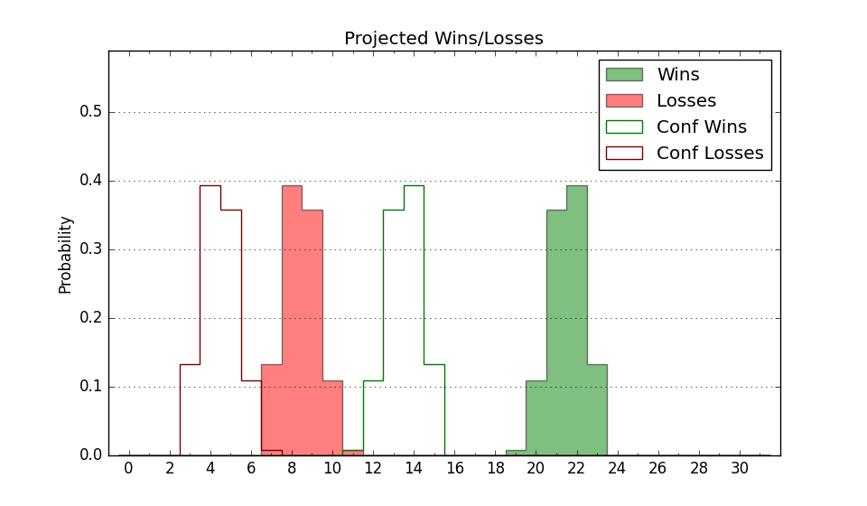

| Home | Game Probabilities | Conferences | Preseason Predictions | Odds Charts | NCAA Tournament |
| City: | Dallas, Texas | |
| Conference: | American (3rd)
| |
| Record: | 10-3 (Conf) 18-7 (Overall) | |
| Ratings: | Comp.: 19.2 (30th) Net: 19.3 (30th) Off: 114.5 (43rd) Def: 95.2 (26th) SoR: 31.0 (67th) |
| Remaining | ||||||
|---|---|---|---|---|---|---|
| Date | Opponent | Win Prob | Pred. | |||
| 2/22 | @ Florida Atlantic (39) | 37.9% | L 74-77 | |||
| 2/25 | @ South Florida (100) | 61.3% | W 74-71 | |||
| 3/2 | UTSA (272) | 96.8% | W 93-68 | |||
| 3/6 | East Carolina (161) | 92.4% | W 77-60 | |||
| 3/10 | @ UAB (113) | 65.6% | W 76-72 | |||
| Previous | Game Score | |||||
| Date | Opponent | Win Prob | Result | Off | Def | Net |
| 11/8 | Western Illinois (233) | 95.5% | W 90-53 | 0.6 | 16.3 | 16.9 |
| 11/9 | Lamar (234) | 95.6% | W 78-67 | -15.3 | 1.0 | -14.3 |
| 11/14 | Texas A&M (44) | 69.5% | L 66-79 | -19.0 | -10.4 | -29.4 |
| 11/20 | (N) West Virginia (145) | 84.1% | W 70-58 | -7.9 | 11.1 | 3.2 |
| 11/22 | (N) Wisconsin (20) | 41.5% | L 61-69 | -10.6 | -1.3 | -11.9 |
| 11/26 | Louisiana Monroe (304) | 97.8% | W 70-57 | -11.0 | -6.2 | -17.2 |
| 11/29 | Dayton (19) | 56.2% | L 63-65 | -15.0 | 1.4 | -13.7 |
| 12/3 | Texas A&M Commerce (326) | 98.5% | W 90-47 | 14.2 | 5.2 | 19.5 |
| 12/6 | @Arizona St. (128) | 70.8% | L 74-76 | -6.6 | -7.0 | -13.6 |
| 12/16 | @Florida St. (96) | 59.9% | W 68-57 | -1.0 | 12.6 | 11.6 |
| 12/19 | Houston Baptist (354) | 99.2% | W 89-53 | -1.0 | 8.2 | 7.2 |
| 12/22 | @Murray St. (137) | 72.3% | W 92-65 | 11.4 | 10.6 | 22.1 |
| 1/2 | Charlotte (99) | 84.0% | W 66-54 | -7.4 | 12.9 | 5.5 |
| 1/7 | @Memphis (84) | 55.3% | L 59-62 | -25.0 | 16.2 | -8.7 |
| 1/13 | @East Carolina (161) | 78.2% | W 75-64 | 4.8 | 2.2 | 7.1 |
| 1/16 | Temple (223) | 95.4% | W 77-64 | 1.7 | -11.7 | -10.0 |
| 1/20 | Tulsa (194) | 94.1% | W 103-70 | 14.5 | -1.6 | 12.9 |
| 1/25 | @North Texas (69) | 49.8% | L 66-68 | 5.8 | -6.7 | -1.0 |
| 1/28 | @Wichita St. (167) | 78.8% | L 72-77 | -0.6 | -14.1 | -14.7 |
| 2/1 | Tulane (117) | 87.0% | W 80-76 | -8.0 | -4.5 | -12.6 |
| 2/4 | UAB (113) | 86.7% | W 72-69 | -2.7 | -9.2 | -11.9 |
| 2/7 | @Rice (215) | 85.0% | W 95-69 | 31.8 | -7.2 | 24.7 |
| 2/11 | North Texas (69) | 77.2% | W 71-68 | 15.3 | -15.0 | 0.3 |
| 2/15 | @Tulane (117) | 66.2% | W 87-79 | 5.3 | -0.7 | 4.6 |
| 2/18 | Memphis (84) | 80.8% | W 106-79 | 21.6 | -5.9 | 15.7 |
| Stats & Trends | |||||
|---|---|---|---|---|---|
| Current | Day | Week | Month | Season | |
| Composite | 19.2 | +0.7 | +0.9 | +2.6 | +13.8 |
| Comp Rank | 30 | +8 | +11 | +15 | +66 |
| Net Efficiency | 19.3 | +0.6 | +0.7 | +1.3 | -- |
| Net Rank | 30 | +6 | +10 | +10 | -- |
| Off Efficiency | 114.5 | +1.0 | +1.1 | +5.7 | -- |
| Off Rank | 43 | +13 | +15 | +56 | -- |
| Def Efficiency | 95.2 | -0.3 | -0.4 | -4.3 | -- |
| Def Rank | 26 | -3 | -- | -14 | -- |
| SoS Rank | 104 | -1 | +6 | +31 | -- |
| Exp. Wins | 21.5 | +0.2 | +0.6 | +0.5 | +5.3 |
| Exp. Conf Wins | 13.5 | +0.2 | +0.6 | +0.5 | +4.3 |
| Conf Champ Prob | 20.6 | -0.3 | +4.1 | -5.5 | +16.6 |

| Advanced Stats | ||
|---|---|---|
| Stat | Value | Rank |
| Off Eff FG % | 0.540 | 74 |
| Off Ast Ratio | 0.171 | 48 |
| Off ORB% | 0.373 | 15 |
| Off TO Rate | 0.136 | 99 |
| Off FT Ratio | 0.295 | 272 |
| Def Eff FG % | 0.451 | 25 |
| Def Ast Ratio | 0.142 | 170 |
| Def ORB% | 0.292 | 233 |
| Def TO Rate | 0.167 | 56 |
| Def FT Ratio | 0.289 | 85 |